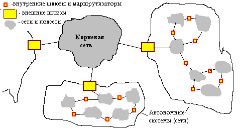
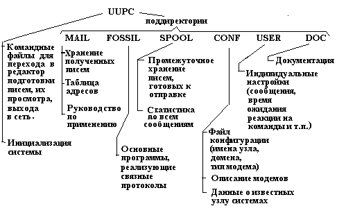

Глава 6 Структура и функции территориальных сетей
1. Структура территориальных сетей. Глобальная сеть Internet - самая крупная и единственная в своем роде сеть в мире. Среди глобальных сетей она занимает уникальное положение. Правильнее ее рассматривать как некоторую надсеть - объединение многих сетей, сохраняющих самостоятельное значение. Действительно, Internet не имеет ни четко выраженного владельца, ни национальной принадлежности. Любая сеть может иметь связь с Internet и, следовательно, рассматриваться как ее часть, если в ней используются принятые для Internet протоколы TCP/IP или имеются конверторы в протоколы TCP/IP. Практически все сети национального и регионального масштабов имеют выход в Internet.
Типичная территориальная (национальная) сеть имеет иерархическую структуру.
Верхний уровень - федеральные узлы, связанные между собой магистральными каналами связи. Магистральные каналы физически организуются на ВОЛС или на спутниковых каналах связи. Средний уровень - региональные узлы, образующие региональные сети. Они связаны с федеральными узлами и, возможно, между собой выделенными высоко- или среднескоростными каналами, такими, как каналы Т1, Е1, B-ISDN или радиорелейные линии. Нижний уровень - местные узлы (серверы доступа), связанные с региональными узлами преимущественно коммутируемыми или выделенными телефонными каналами связи, хотя заметна тенденция к переходу к высоко- и среднескоростным каналам. Именно к местным узлам подключаются локальные сети малых и средних предприятий, а также компьютеры отдельных пользователей. Корпоративные сети крупных предприятий соединяются с региональными узлами выделенными высоко- или среднескоростными каналами.
Иерархическая архитектура Internet может быть представлена так, как на рис. 6.1.

Внутри каждой автономной системы (AS) используется некоторый единый внутренний протокол маршрутизации, например IGP. Между AS маршрутизация подчиняется внешним протоколам, например EGP.
2. Типичные услуги телекоммуникаций. Основные услуги телеком-муникационных технологий - электронная почта, передача файлов, телеконференции, справочные службы (доски объявлений), видеоконференции, доступ к информационным ресурсам (информационным базам) сетевых серверов, мобильная сотовая связь, компьютерная телефония.
3. Протоколы теледоступа. Специфика телекоммуникаций проявляется прежде всего в прикладных протоколах. Среди них наиболее известны протоколы, связанные с Internet, и протоколы ISO-IP (ISO 8473), относящиеся к семиуровневой модели открытых систем. К прикладным протоколам Internet относятся следующие:
Telnet - протокол эмуляции терминала, или, другими словами, протокол реализации дистанционного управления используется для подключения клиента к серверу при их размещении на разных компьютерах, пользователь через свой терминал имеет доступ к компьютеру-серверу;
FTP - протокол файлового обмена (реализуется режим удаленного узла), клиент может запрашивать и получать файлы с сервера, адрес которого указан в запросе;
HTTP (Hypertext Transmission Protocol) - протокол для связи WWW-серверов и WWW-клиентов;
NFS - сетевая файловая система, обеспечивающая доступ к файлам всех UNIX-машин локальной сети, т.е. файловые системы узлов выглядят для пользователя, как единая файловая система;
SMTP, IMAP, POP3 - протоколы электронной почты.
Указанные протоколы реализуются с помощью соответствующего программного обеспечения. Для Telnet, FTP, SMTP на серверной стороне выделены фиксированные номера протокольных портов.
В семиуровневой модели ISO используются аналогичные протоколы. Так, протокол VT соответствует протоколу Telnet, FTAM - FTP, MOTIS - SMTP, CMIP - SNMP, протокол RDA (Remote Database Access) предназначен для доступа к удаленным базам данных.
4. Электронная почта. Электронная почта (E-mail) - средство обмена сообщениями по электронным коммуникациям (в режиме off-line). Можно пересылать текстовые сообщения и архивированные файлы. В последних могут содержаться данные (например, тексты программ, графические данные) в различных форматах. В случае архивирования изображений возникает проблема выбора форматов кодирования. Функции клиента - составление, отправление, архивирование сообщений.
Разработан ряд альтернативных протоколов электронной почты для прикладного уровня. Наиболее популярны среди них протоколы SMTP в стеке протоколов TCP/IP и Х.400 в модели ISO. Расширение числа возможных кодировок и форматов данных по сравнению с SMTP сделано в MIME (Multipurpose Internet Mail Extensions). На их базе разработано программное обеспечение E-mail, способное работать в обоих протоколах. Оно включает программы почтовых серверов и клиентов. Применение MIME упрощает пересылку графических и звуковых файлов, реализацию шифрования и электронной подписи.
На ЭВМ пользователя должна быть установлена программа-клиент, поддерживающая названные выше функции создания, передачи и приема сообщений. На почтовом сервере, выделяемом в корпоративной или локальной сети, организуется промежуточное хранение поступающих сообщений. Связь индивидуальных пользователей с почтовым сервером осуществляется по протоколам IMAP или POP3. Для индивидуального пользователя, общающегося с другими абонентами по телефонной сети общего пользования, такое промежуточное хранение возможно в собственном компьютере, но тогда требуется либо круглосуточное включение компьютера, либо предварительная договоренность о времени связи.
В территориальных сетях почтовые сообщения проходят через ряд промежуточных федеральных или региональных узлов. В таких узлах устанавливается программное обеспечение (так называемый агент передачи сообщений), выполняющее функции сортировки и маршрутизации сообщений.
Примерами программных систем электронной почты, выполняющих все отмеченные функции E-mail, могут служить Lotus cc: mail, Microsoft Mail или Outlook Express. Они позволяют адресовать сообщения индивидуальному пользователю; на доску объявлений; на последовательный просмотр несколькими исполнителями с возможностями коррекции сообщения; поиск сообщений, пришедших в почтовый сервер, по контексту, по адресу, по времени отправки.
В сетях Netware на почтовом сервере можно использовать программное обеспечение MHS фирмы Novell, а клиентскими программами могут быть Mapi или Vim.
Комплекс программ UUCP (UNIX-to-UNIX Copy Program), поддерживающих модемную связь между UNIX-машинами, включает средства электронной почты (программа Mail) и телеконференций. Комплекс UUPC - эмуляция UUCP для операционной системы MS DOS. В этих комплексах имеется удобный графический пользовательский интерфейс, но можно работать и непосредственно с командами Mail.
В настоящее время при разработке многих программных систем предусматривается интерфейс со средствами электронной почты, клиентские программы E-mail стараются включать в Web-браузеры сети Internet, а также в такие прикладные программные системы, как АСУ, САПР, системы документооборота.
Письма в E-mail состоят из заголовка и тела (текста). В заголовке указывается кому предназначено письмо, от кого оно поступило, кому посланы копии, дата отправки, указатель ключа, по которому пользователь может определить ключ для декодирования текста. В протоколе IMAP (Internet Message Access Protocol) сначала клиенту передается заголовок, а текст остается на сервере, затем пользователь при желании может получить и весь текст. В протоколе POP3 при обращении к почтовому серверу на клиентский узел переписывается все сообщение.
Основные команды программ электронной почты (на примере программы Mail).
$ write <имя пользователя> - посылка сообщения на экран указанного пользователя в данной ЛВС;
$ mesg n - закрытие экрана для сообщений по E-mail;
$ mesg y - открытие экрана;
$ mail - чтение из почтового ящика (выделенного файла в почтовом сервере) сведений о количестве пришедших сообщений и переход в командный режим.
В командном режиме субкоманды начинаются с символа "?".
? p - вывод текущего сообщения;
? * - вывод всех пришедших сообщений;
? x - выход из Mail;
? q - выход с удалением прочитанных сообщений из почтового ящика (но предусмотрено сохранение этих сообщений в другом специальном файле с именем mbox);
? save <номер сообщения><имя файла> - сохранение сообщения в указанном пользователем файле;
? delete - удаление текущего сообщения из почтового ящика;
? mail - переход в режим подготовки сообщений внутри командного режима;
? edit - вызов редактора для работы с сообщениями;
~ <имя команды> - команда, помещаемая внутри текста сообщения при его наборе.
На рис. 6.2 в качестве примера приведена структура почтовой системы UUPC.

5. Файловый обмен. Файловый обмен - доступ к файлам, распределенным по различным компьютерам. В сети Internet на прикладном уровне используется протокол FTP. Доступ возможен в режимах off-line и on-line. В режиме off-line посылается запрос к FTP-серверу, сервер формирует и посылает ответ на запрос. В режиме on-line осуществляется интерактивный просмотр каталогов FTP-cервера, выбор и передача нужных файлов. На ЭВМ пользователя нужен FTP-клиент.
Доступ к базам данных удаленных ЭВМ с эмуляцией удаленной машины на ЭВМ пользователя выполняется с помощью протокола Telnet.
Протокол файлового обмена FTP. При запросе файла по протоколу FTP пользователь должен знать, где находится нужный ему файл. Для этого удобно воспользоваться другой информационной системой сети Internet, называемой Archie. Обращаясь к клиенту Archie по команде
archie <имя файла>,
пользователь получает в ответ адрес сервера, имя директории и размер файла. Далее можно обращаться к FTP-клиенту:
ftp[<параметры>][<имя сервера>]. (1)
Как обычно, квадратные скобки в записи команд означают необязательные части. Параметры используются только при отладке FTP. В качестве имени сервера указывается IP-имя или IP-адрес удаленного компьютера.
В большинстве серверов Internet для входа по FTP-команде нужны предварительная регистрация пользователя и указание пароля. Однако это не требуется при обращениях к общедоступным (анонимным) серверам. Такие серверы создают и обслуживают организации, заинтересованные в распространении информации определенного вида.
После выполнения команды (1) FTP-клиент переходит в командный режим. Примеры субкоманд, которые могут выполняться в командном режиме (ниже удаленный компьютер обозначен S, локальный компьютер - T ):
open [<имя S>] - устанавливает связь с удаленным компьютером;
close [<имя S>] - разрывает связь с удаленным компьютером, оставаясь в командном режиме;
quit - то же, что и close, но с выходом из командного режима (из ftp);
cd [<имя каталога в S>] - выбор каталога на сервере;
get [<имя файла в S>[<имя файла в T >]] - перепись файла с S на T;
mget [<имена файлов в S>] - то же, что и get, но нескольких файлов;
put [<имя файла в Т>[<имя файла в S>]] - обратная перепись (допускается не во всех случаях);
mput <имена файлов в S> - то же, что и put, но более одного файла;
user <имя/пароль> - идентификация пользователя на сервере.
Пример последовательности команд при работе по протоколу FTP :
ftp> cd pub - переход в каталог pub;
ftp> ascii - установка передачи текста в коде ASSCII (если binary, то двоичные данные);
ftp> get aaa aaa.txt - перепись файла ааа в компьютер пользователя под именем aaa.txt;
ftp> quit - конец.
Каждый обмен порождает два процесса. Управляющий (командный) процесс инициирован во время всего сеанса связи и осуществляется через протокол Тelnet, а процесс передачи файла - только на время передачи. Номера протокольных портов сервера 20 и 21, у клиента могут быть различные номера портов, в том числе несколько одновременно. Для одновременного обслуживания нескольких клиентов создаются копии программного обеспечения FTP-процессов в сервере и у клиентов.
6. Вспомогательные системы Archie и Whois в Internet. Вспомогательные средства облегчают поиск в разветвленных сетях. В Internet к ним относится Archie - информационная система для просмотра содержимого FTP-серверов. Вместо утомительной навигации вручную по каталогам система позволяет искать данные по ключевым словам или по образцу. Другая вспомогательная система в Internet - система Whois - справочник по абонентам электронной почты.
7. Протокол эмуляции терминала Telnet. С помощью этого протокола пользователь сети Internet может работать на удаленном компьютере. Связь устанавливается при обращении к Telnet-программе командой
telnet: <имя базы данных или системы каталогов> или <имя удаленного компьютера S>
После установления связи все, что пользователь набирает на клавиатуре своего компьютера, передается в S, а содержимое экрана S отображается на экране пользователя. Для возвращения в свой компьютер (т.е. в командный режим клиентской программы Тelnet) нужно нажать соответствующую клавишу (Ctrl-). Примерами команд в клиентской программе могут служить: установление связи (open), возвращение в командный режим (close), завершение работы (quit). Передача сообщений при работе с Telnet осуществляется с помощью средств FTP.
Telnet должен иметь возможность работать в условиях разных аппаратных платформ клиента и сервера. Это требование выполняется через промежуточный виртуальный терминал (аналогично SQL сервису в ODBC). В терминале зафиксирована интерпретация различных символов управления, поскольку их разновидностей не так уж много.
Необходимо предусматривать выход из блокировок, возникающих, например, вследствие зацикливания процесса на сервере; он осуществляется очисткой серверного буфера.
Схема Telnet-процесса представлена на рис. 6.3.
Рис. 6.3. Эмуляция терминала по протоколу Telnet
8. Сетевые средства ОС Unix. В Unix имеется ряд команд и поддерживающих их программ для работы в сети. Во-первых, это команды ftp, telnet, реализующие файловый обмен и эмуляцию удаленного узла на базе протоколов TCP/IP. Во-вторых, протокол, команды и программы UUCP, разработанные с ориентацией на асинхронную модемную связь по телефонным линиям между удаленными Unix-узлами в корпоративных и территориальных сетях.
Функции UUCP:
- определение имен узлов (как собственного, так и других узлов сети), для этого используется команда uuname;
- электронная почта; по команде mail сообщения, представленные в коде ASCII, отсылаются, по командам uuencode и uudecode кодируются и декодируются файлы других форматов;
- выполнение заданий на удаленном узле, применяются команды cu (для интерактивной работы с удаленным узлом) и uux (задания выполняются в пакетном режиме);
- файловый обмен осуществляется по команде uucp, имеющей форму uucp <адресная часть>, в адресной части указывается, какой файл, откуда и куда он пересылается.
9. Телеконференции и "доски объявлений". Телеконференции - доступ к информации, выделенной для группового использования в отдельных конференциях (newsgroups).
Возможны глобальные и локальные телеконференции. Включение материалов в newsgroups, рассылка извещений о новых поступивших материалах, выполнение заказов - основные функции программного обеспечения телеконференций. Возможны режимы E-mail и on-line.
Самая крупная система телеконференций - USENET. В USENET информация организована иерархически. Сообщения рассылаются или лавинообразно, или через списки рассылки. В режиме on-line можно прочитать список сообщений, а затем и выбранное сообщение. В режиме off-line из списка выбирается сообщение и на него посылается заказ.
Телеконференции могут быть с модератором или без него. Пример: работа коллектива авторов над книгой по спискам рассылки.
Существуют также средства аудиоконференций (голосовых телеконференций). Вызов, соединение, разговор происходят для пользователя как в обычном телефоне, но связь идет через Internet.
Электронная "доска объявлений" BBS (Bulletin Board System) - технология, близкая по функциональному назначению к телеконференции, позволяет централизованно и оперативно направлять сообщения для многих пользователей. Программное обеспечение BBS сочетает в себе средства электронной почты, телеконференций и обмена файлами. Примеры программ, в которых имеются средства BBS, - Lotus Notes, World-group.
В системах принудительной доставки информации (push-технология) подписчики без дополнительных запросов снабжаются часто обновляемой информацией.
В настоящее время (1998 г.) интенсивно развиваются технологии настольной конференц-связи в реальном масштабе времени. Возможны несколько уровней настольной конференц-связи.
В зависимости от вида разделяемой пользователями информации различают уровни: простая E-mail сессия, совместная работа над документом без голосовой связи (shared whiteboard - разделяемая "доска"), то же с голосовой связью (разновидность аудиоконференций), видео-конференция. По мере повышения уровня возрастают требования к пропускной способности используемых каналов передачи данных. Для протых видов конференц-связи, а также и для аудиоконференций (конечно, при применении современных эффективных способов сжатия информации) можно использовать даже обычные телефонные линии, начиная с 8-10 кбит/с. Но лучше использовать в качестве "последней мили" цифровую ISDN или xDSL линию.
В зависимости от числа участников и способа интерактивной связи между ними различают двухточечную (unicast), широковещательную (broadcast) и многоточечную (multicast) конференции. Если в широковещательной конференции информация от центрального узла доставляется всем участникам, то в многоточечной конференции она рассылается избирательно, т.е. одновременно может идти обмен разной информацией внутри нескольких подгрупп одной группы пользователей.
Наиболее очевидные области применения настольной конференц-связи - это дистанционное обучение, медицинские консультации, различные бизнес-приложения.
Программное обеспечение телеконференций включает серверную и клиентскую части.
В клиентской программе должны быть, как минимум, средства E-mail, многооконный текстовый редактор (так, принимаемый и отправляемый партнеру тексты помещаются в разные окна, отдельное окно может быть выделено для видео в случае видеоконференций), средства файлового обмена. Наиболее известными клиентскими программами (1998 г.) являются ProShare (Intel) и NetMeeting (Microsoft). В системе дистанционного обучения Class Point клиентская часть включает отдельные программы для инструктора и студента.
Серверная часть (MCU - Multipoint Control Unit) служит для распределения потока данных между пользователями с согласованием форматов окон с видеоинформацией, способов сжатия данных, скоростей потоков, идущих от разных сетей (пользователей). Примеры серверов: Whute Pine's Meeting Point для видеоконференций, DataBeam's Learning Server для систем дистанционного обучения.
10. Видеоконференции. Видеоконференция - способ связи, включающий передачу видеоизображений по телекоммуникационным каналам связи с возможностями интерактивного общения (в режиме on-line). Очевидно, что требования к пропускной способности каналов передачи данных в видеоконференциях существенно выше, чем в обычных телеконференциях. Видеоконференции стали доступными (для достаточно крупных организаций) после развития высокоскоростных каналов связи и эффективных алгоритмов сжатия данных при их передаче. В настоящее время начинается бум широкого внедрения сравнительно недорогих (от 1,5 до 7 тыс. долл.) настольных систем видеоконференц-связи.
Аналоговое телевидение - самый дорогой вид видеоконференций при высоком качестве передачи динамических изображений. Требуется полоса около 5 МГц, что при кодово-импульсной модуляции и кодировании отсчетов восьмибитовыми комбинациями эквивалентно пропускной способности каналов 80 Мбит/с.
В остальных способах требования к пропускной способности существенно снижены благодаря сжатию информации с помощью устройств кодирования, называемых кодеки (кодек - совокупность первых слогов слов кодирование и декодирование).
Специализированная видеоконференц-система включает дистанционно управляемую видеокамеру, монитор с большим экраном, микрофоны, динамики, устройство для считывания графических документов, кодеки. Цена комплекта - не менее 100 тыс. долл., что все-таки дешевле аналогового телевидения. Требуется выделенный канал со скоростью выше 64 кбит/с. Пример программного обеспечения - PictureTel.
Цифровые видеотелефоны используются для оперативного делового общения. Состав комплекта аппаратуры: видеокамера, монитор, микрофон, динамик, кодек. Связь чаще всего организуется по цифровым каналам (ISDN). Не требуется высокого качества изображения, этот способ обходится значительно дешевле аналогового телевидения. Цена комплекта (1995 г.) - 5..7 тыс. долл., но цены имеют тенденцию к снижению.
Видеоконференции для двух собеседников на базе ПЭВМ или рабочих станций (двухточечные настольные видеоконференции) треюуют применения мультимедийных средств . Используются компьютер с аудио-, видео- и сетевой платами, микрофон, динамик, видеокамера. Примеры программного обеспечения: Intel Proshare или Sharevision, работающие под Windows 3..x или .95. Эти системы можно использовать с телефонными линиями и высокоскоростными модемами, но качество будет низкое. Так, при 28,8 кбит/с частота кадров 7...10 Гц, размер окна 176*144 пикселей. Использование ISDN позволяет достичь частоты кадров 10...30 Гц. В большинстве систем предусмотрено наличие дополнительного окна, в котором виден совместно разрабатываемый документ.
11. Стандарты конференц-связи. Для организации конференц-связи имеется группа стандартов серии Т.120, разработанных ITU. Стандарты Т.122/125 относятся к службе многоточечных соединений, Т,126 - к whiteboerd технологии, Т.127 - к передаче файлов при многоточечной связи. Стандарт Т.123 содержит описание транспортных протоколов, которые могут использоваться в системах конференц-связи. Не забыты и пользователи с недостатками слуха или речи - для них в стандарте Т.124 разработан соответствующий язык диаграмм.
Другая группа стандартов конференц-связи Н.32х посвящена реализации мультимедийных приложений в различных типах сетей. Стандарты Н.320, Н.321, Н.322, Н.323 и Н.324 ориентированны соответственно на каналы N-ISDN (узкополосные), B-ISDN (широкополосные), локальные сети с гарантированной пропускной способностью, то же без гарантированной полосы пропускания и телефонные линии с коммутацией каналов. Стандарт Н.310 относится к мультимедийным приложениям с высоким разрешением. В этих стандартах устанавливаются требования к сжатию информации, к протоколу передачи, к синхронизации видео и звука.
12. Доступ к распределенным базам данных. В системах "клиент/сервер" запрос должен формироваться в ЭВМ пользователя, а организация поиска данных, их обработка и формирование ответа на запрос относятся к ЭВМ-серверу. При этом нужная информация может быть распределена по различным серверам.
В сети Internet имеются специальные серверы баз данных, называемые WAIS (Wide Area Information Server), в которых могут содержаться совокупности баз данных под управлением различных СУБД.
Типичный сценарий работы с WAIS-сервером:
1) выбор нужной базы данных;
2) формирование запроса, состоящего из ключевых слов;
3) посылка запроса к WAIS-серверу;
4) получение от сервера заголовков документов, соответствующих заданным ключевым словам;
5) выбор нужного заголовка и его посылка к серверу;
6) получение текста документа.
К сожалению, WAIS в настоящее время не развивается, поэтому используется мало, хотя индексирование и поиск по индексам в больших массивах неструктурированной информации, что было одной из основных функций WAIS, - задача актуальная.
Возможно, что причина снижения интереса к WAIS кроется в реализации Web-технологии во многих прикладных системах, в том числе в ряде СУБД. Так, в Oracle имеется свой Web Server, который принимает http-запросы и переправляет их одному из обработчиков (в Oracle их называют картриджами). Среди обработчиков - интерпретатор языка Java. Возможны обработчики, создаваемые пользователями.
13. Информационная система Gopher. В сети Internet имеются уникальные информационные системы Gopher и более современная WWW, представляющие собой распределенные хранилища информации, серверное и клиентское программное обеспечение для обслуживания этой информации и доступа к ней.
Информационная система Gopher представляет собой удобную для использования систему дистанционного доступа к файлам. Файлы размещены в различных Gopher-серверах, находящихся в разных точках земного шара и связанных между собой сетью Internet. Доступ осуществляется через Gopher-клиентов, находящихся в узлах пользователей сети Internet.
Информация в сервере имеет иерархическую структуру и выражена преимущественно текстовыми файлами (хотя возможно представление графических, звуковых и т.п. файлов). При обращении к серверу по команде
gopher <имя сервера>
на экран клиента вызывается головное меню (по умолчанию обращение происходит к серверу, в котором клиент зарегистрирован). Далее пользователь может обращаться к пунктам меню и подменю и считывать соответствующую выбранным пунктам информацию. Выбрав пункт "Other servers", пользователь может путешествовать по всему Gopher-пространству.
Поскольку число файлов в Gopher-пространстве чрезвычайно велико, для облегчения поиска можно воспользоваться программой Veronica, задав ключевое слово интересующей Вас темы. Veronica выдаст список пунктов различных меню, в заголовках которых есть это слово.
Проще всего обращаться к Gopher-серверам из узла Internet, т.е. из компьютера, имеющего адрес в этой сети - IP-адрес. Связь в этом случае осуществляется по протоколу TCP/IP. Если имеются лишь средства электронной почты, то можно обращаться только к некоторым Gopher-серверам, называемым почтовыми. При этом на любое обращение по E-mail почтовый сервер в ответ посылает головное меню. В нем необходимо отметить определенным символом нужный пункт и вернуть меню серверу. Сервер посылает соответствующее подменю или файл и т.д. Здесь связь осуществляется по протоколу UUCP.
Другой вариант работы пользователей, не имеющих прямого выхода в Internet, - работа по протоколу Telnet с удаленным промежуточным узлом, имеющим IP-адрес.
14. Информационная система WWW. WWW (World Wide Web - всемирная паутина) - гипертекстовая информационная система сети Internet. Другое ее краткое название - Web. Это более современная система по сравнению с Gopher и предоставляет пользователям большие возможности.
Во-первых, это гипертекст - структурированный текст с введением в него перекрестных ссылок, отражающих смысловые связи частей текста. Слова-ссылки выделяются цветом и/или подчеркиванием. Выбор ссылки вызывает на экран связанный со словом-ссылкой текст или рисунок. Можно искать нужный материал по ключевым словам.
Во-вторых, облегчено по сравнению с Gopher представление и получение графических изображений. К 1996 г. в мире насчитывалось около 30 тысяч WWW-серверов.
Информация, доступная по Web-технологии, хранится в Web-серверах. Сервер имеет программу Listener, постоянно отслеживающую приход на определенный порт (обычно это порт 80) запросов от клиентов. Сервер удовлетворяет запросы, посылая клиенту содержимое запрошенных Web-страниц или результаты выполнения запрошенных процедур.
Клиентские программы WWW называют браузерами (brousers). Имеются текстовые (например, Lynx) и графические (наиболее известны Netscape Navigator и MS Explorer) браузеры. Sun предлагает браузер HotJava. В браузерах имеются команды листания, перехода к предыдущему или последующему документу, печати, перехода по гипертекстовой ссылке и т.п. Из браузеров доступны различные сервисы - FTP, Gopher, USENET, E-mail. Для подготовки материалов для их включения в базу WWW разработаны специальный язык HTML (Hypertext Markup Language) и реализующие его программные редакторы, например Internet Assistant в составе редактора Word или SiteEdit, подготовка документов предусмотрена и в составе большинства браузеров.
Для связи Web-серверов и клиентов разработан протокол HTTP, работающий на базе TCP/IP. Web-сервер получает запрос от браузера, находит соответствующий запросу файл и передает его для просмотра в браузер. Популярными серверами являются Apache Digital для ОС Unix, Netscape Enterprise Server и Microsoft Internet Information Server (IIS), которые могут работать как в Unix, так и в Windows NT, и Netware Web Server, предназначенный для работы в ОС Netware. Все три сервера поддерживают язык CGI, имеют встроенный HTML-редактор. Кроме того, в первых двух из них поддерживается стандарт шифрования SSL (Secure Sockets Layer) для защиты передаваемых по сети данных от несанкционированного доступа. Опыт показывает, что для крупных серверов предпочтительнее платформа Unix, тогда как для серверов с малым числом транзакций лучше подходит ОС Windows NT.
На базе HTML создан язык виртуальной реальности VRML (Virtual Reality Modeling Language)- в нем дополнительно можно использовать 3D графику.
В новых ОС (например, ОС Cairo) ожидается появление специальных средств поиска информации в серверах Internet. Пример такой технологии RDF (Resource Definition Format) - упорядочение метаинформации наподобие библиотечных каталогов (классификация по содержанию). В настоящее время для облегчения поиска применяют информационно-поисковые системы (ИПС), располагаемые на доступных пользователям Internet серверах. В этих системах собирается, индексируется и регистрируется информация о документах, имеющихся в обслуживаемой группе Web-серверов. Индексируются или все значащие слова, имеющиеся в документах, или только слова из заголовков. Пользователю предоставляется возможность обращаться к серверу с запросами на естественном языке, с сложными запросами, включающими логические связки. Примером таких ИПС может служить AltaVista. Например, для функционирования AltaVista фирма DEC выделила 6 компьютеров, самый мощный из них - 10-процессорная ЭВМ Alpha-8400, база данных имеет объем в 45 Гбайт. В этой ИПС к 1996 г. была собрана информация с 30 миллионов страниц Web-серверов.
15. Язык HTML. HTML - гипертекстовый язык для заполнения информационных Web-серверов. Он описывает структуру документа, вид которого на экране определяется браузером.
Описание на HTML - это текст в формате ASCII и последовательность включенных в него команд (управляющих кодов, называемых также дескрипторами, или тегами). Эти команды расставляются в нужных местах текста, определяя шрифты, переносы, появление графических изображений, ссылки и т.п. В браузерах WWW вставка команд осуществляется нажатием соответствующих клавиш. Так, в Internet Assistant, входящем как дополнение в редактор MS Word, текст и команды набираются в едином процессе.
Собственно команды имеют форму <___>, где вместо ___ записывается имя команды.
Структура текста в WWW имеет вид:
<HTML><HEAD>
<TITLE> Заголовок текста </TITLE>
</HEAD>
<BODY>
Текст документа
</BODY>
</HTML>
В клиентской области окна при просмотре появится только текст, помещенный между командами <BODY> и </BODY>. Заголовок между командами <TITLE> и </TITLE> выполняет только служебные функции.
Команды форматирования текста (дескрипторы компоновки):
<P> - конец абзаца;
<BR> - перевод строки;
<HR> - перевод строки с печатью горизонтальной линии, разделяющей части текста;
<LISTING> Текст </LISTING> - для представления листингов программ;
<BLOCKQUOTE> Текст </BLOCKQUOTE> - для выделения цитат.
Команды форматирования заголовков (дескрипторы стиля):
<H1> Текст </H1> - текст печатается наиболее крупным шрифтом, используется для заголовков верхнего уровня;
<H2> Текст </H2> - для следующего уровня и т.д. вплоть до команды <H6>;
<PRE> Текст </PRE> - указанный текст представлен заданным при его записи шрифтом.
Команды форматирования символов представлены парными символами B, I, U; текст между открывающей и закрывающей командами будет выделен соответственно полужирно, курсивом, подчеркиванием.
Дескрипторы списка :
Команды форматирования списков <OL> и <UL> используются для выделения пунктов списков соответственно с нумерацией или с пометкой специальным символом (например, *); каждый пункт в списке должен начинаться с команды <LI>. В словарях и глоссариях удобно применять команды <DL> - начало списка, <DT> - перед каждым новым термином словаря и <DD> - перед текстом определения каждого термина.
Дескрипторы связи :
В командах вставки графики и гипертекстовых ссылок используются адреса вставляемого или ссылочного материала, называемые URL (Uniform Resourse Locator). Ссылаться можно как на нужные места в том же документе, в котором поставлена ссылка, так и на другие файлы, находящиеся в любом месте сети. Перед простановкой внутренней ссылки, т.е. ссылки на некоторую позицию в данном файле, нужно разместить метку в этой позиции. Тогда URL есть указание этой метки, например, URL= #a35 есть ссылка на метку a35. URL может представлять собой имя файла в данном узле сети или IP-имя другого узла с указанием местоположения файла в этом узле и, возможно, также метки внутри этого файла.
Команда вставки графики
<IMG SRC="URL"[ALIGN=TOP|MIDDLE|BOTTOM][ALT="text"]>
ALIGN - параметр выравнивания, указывает место в окне для расположения рисунка; ALT - задает текст, который выводится на экран вместо рисунка в текстовых браузерах типа Lynx. Сами изображения должны быть в определенном формате (обычно это .gif или .jpeg).
Экран может быть разделен на несколько окон (областей, фреймов) с помощью парного тега <FRAMESET>. В каждом окне помещается содержимое файла (текст, изображение) указанием источника в теге <FRAME>, например
<FRAME SRC=имя файла>.
Команда гипертекстовой ссылки
<A HREF="URL" >Текст </A>
Текст в окне будет выделен цветом или подчеркиванием. Можно ссылаться на определенное место в документе. Тогда
<A HREF="URL#метка"> Текст </A>
Сама метка в документе имеет вид
<A NAME="метка"> Текст </A>
Ссылки на фрагменты данного документа можно упростить
<A HREF="#метка" >Текст </A>
Включение рисунка выполняется с помощью дескриптора
<IMG SRC = "fgr.gif"> или
<A HREF = "http://www.abc.ru/de.htm"><IMGSRC = "fgr.gif"></A>
где fgr.gif и www.abc.ru/de.htm - конкретные имена, взятые для примера.
Расширение языка HTML - это XML (подмножество языка из стандарта SGML). Другое направление развития HTML - его динамическая версия DHTML.
SGML (Standard Generalized Markup Language - стандартный обобщенный язык разметки) определяет содержимое и форму документов в виде последовательности объектов данных. Объектные данные могут храниться в различных файлах. Их включение в финальный документ происходит в форматах, задаваемых в специальном файле DTD (Document Type Definition). Шаблоны DTD упрощают хранение и поиск документов в базах данных.
XML (Extensible Markup Language) позволяет использовать в документах типы элементов, создаваемые для конкретных приложений, в нем также используются шаблоны DTD. Для обмена документами на XML между Web-узлами разработан протокол ICE (Information and Content Exchange).
16. Языки и средства создания Web-приложений. Наибольшую известность приобрела Java - это технология и язык программирования сетевых приложений, разработаные фирмой Sun Microsystems для систем распределенных вычислений.
Особенности языка Java: объектно-ориентированный, прототипом является С++, но более прост в использовании (так, например, убраны указатели); введены многопотоковость (например, оператор синхронизации), дополнительная защита от вирусов.
Рис. 6.4. Компоненты программного обеспечения для языка Java
Для пользователей важны также следующие черты языка:
Другими словами, в узле-клиенте достаточно иметь лишь браузер, все остальное можно получить по сети. Однако при этом обостряется проблема информационной безопасности. В связи с этим загружаемым по сети программам (они называются аплетами) обычно запрещается обновлять и читать файлы, кроме тех, которые находятся на хосте самого аплета.
Java-аплеты доступны из HTML-документов (обращение к ним через тег <applet>), хотя могут использоваться и независимо от них. При обращении к аплету он компилируется на сервере, а для исполнения передается клиенту вместе с Web-страницей.
CGI (Common Gateway Interface - общий шлюзовой интерфейс) - программное обеспечение связи HTML браузеров с другими прикладными программами и/или текстами, находящимися на серверной стороне. Программа CGI - посредник между браузером и приложениями. Обычно программа CGI находится на сервере в специальном каталоге CGI_BIN, она является обработчиком запросов, идущих от браузера. Обращение к файлу из этого каталога означает запуск соответствующего обработчика. Если браузер обращается к документу не в HTML формате, то CGI преобразует форму документа в HTML и возвращает ее браузеру. Пример CGI-программы - WebDBC, организующей связь Web-сервера через ODBC-драйверы с нужными СУБД.
Наряду с интерфейсом CGI существуют и более частные интерфейсы, например, ISAPI (Internet Server Application Program Interface) фирмы Microsoft или NSAPI фирмы Netscape.
JavaScript - язык и интерпретатор этого языка для генерации и управления просмотром составных гипертекстовых документов. JavaScript более прост, чем Java, и тексты JavaScript исполняются быстрее, чем тексты Java или запросы к CGI, поскольку обработчики событий JavaScript реализованы в браузере, а не в сервере. Тексты на JavaScript записываются непосредственно в HTML документе с помощью специальных тегов и имеют вид
<SCRIPT LANGUAGE = "javascript"> <!- - . . . //- -> </SCRIPT> (*)
где <!- - . . . //- -> - текст в виде комментария. Браузеры, не имеющие JavaScript- обработчиков, просто игнорируют комментарий, а современные браузеры исполняют записанные в (*) вместо многоточия команды. В отличие от Java программы на JavaScript полностью интерпретируются в браузере.
Рассмотренные языки являются основой для создания программ межплатформенной распределенной среды - crossware. При этом в настоящее время создание крупных корпоративных приложений чаще опирается на применение CGI.
Для разработки приложений в Internet уже созданы специальные языки и средства. Это, кроме упомянутых языков, также язык Visial Basic Script (VBScript).
Sun Microsystems предлагает набор средств JDK (Java Development Kit) для создания Java-программ.
Microsoft разработала технологию создания и использования интерактивных сетевых приложений, названную ActiveX. Некоторые компоненты ActiveX передаются в составе HTML-документов, другие (ISAPI) служат для взаимодействия сервера с приложениями. Microsoft предлагает среду разработки Web-документов и приложений, включающую ряд продуктов, например:
Netscape разработала визуальную среду создания сетевых приложений, включающую СУБД Informix, среда реализует язык JavaScript с интерактивным содержанием и SQL-операторы.
Сетевые функции становятся неотъемлемой частью развитых операционных систем. Так, в ОС Windows NT, начиная с версии 4.0, входит сетевой сервер IIS (Internet Information Server). Он реализует технологии WWW, Gopher, FTP, ISAPI.
17. Разделяемые виртуальные миры (Sharing Virtual Worlds). С помощью глобальных сетей становится возможным создание разделяемых виртуальных миров или сред (DVE - Distributed Virtual Environment). В таких средах для более чем одного пользователя из разных узлов сети создаются возможности взаимодействия в общей виртуальной трехмерной среде. В DVE фигурируют и могут взаимодействовать объекты постоянные (static entities), автономные (autonomous entities) и аваторы (avators). Постоянные объекты служат для представления ландшафта, зданий и т.п. Автономные объекты управляются специальными программами, называемыми агентами (agents). Аваторы - объекты, управляемые пользователями. Для создания трехмерных объектов в DVE разработан язык виртуальной реальности VRML.
Математическое обеспечение DVE включает методы описания взаимодействий объектов в реальном времени, их перемещений в пространстве, представления сцен с различных точек зрения, имитации звука с учетом громкости, реверберации, расстояния от источника до субъекта. В отличие от видеоконференций DVE позволяет имитировать нахождение всех участников конференции за одним столом, хотя физически они могут быть в разных точках земного шара.
Области применения DVE могут быть самыми разнообразными от упомянутых научных конференций до представления театра военных действий с имитацией военных баталий.
18. Примеры телекоммуникационных сетей. Как сказано выше, крупнейшей международной глобальной сетью (а точнее сетью сетей) является сеть Internet. В 1996 г. к ней уже было подключено несколько десятков миллионов ЭВМ из более чем 140 стран. Сеть работает на протоколах TCP/IP. Сеть гетерогенная, узлы могут быть с ОС Unix, VMS, MS DOS и др. Взаимодействие узлов с разными ОС осуществляется через посредство файловой системы NFS. Unix-узлы подключаются непосредственно, другие узлы должны быть оснащены программами PCNFS или PCTCP. Для электронной почты используется несколько протоколов, один из них SMTP. Именно в Internet бурно развиваются рассмотренные выше технологии WWW, Telnet, FTP, DVE и т.п.
В настоящее время (1998 г.) в США реализуется несколько проектов развития национальных сетей с перспективой перехода в глобальный статус. В частности, это проект Internet2.
С 1995 г. в США функционирует сеть vBNS (Very high-performance Network Service). В этой сети используется технология IP-over-ATM. Корневая сеть построена на ВОЛС с пропускной способностью 622 Мбит/с. Внешние шлюзы представлены ATM-переключателями ASX-1000. К портам ASX-1000 подсоединяются непосредственно или через маршрутизаторы Cisco 7507 cети крупных научных и образовательных центров и автономные системы.
Global Network - планируемая фирмой IBM глобальная сеть ATM. Стратегическая задача - пользователи подписываются на ассортимент приложений и услуг, предоставляемых по сети, вместо покупки и сопровождения собственного программного обеспечения.
Среди множества других сетей отметим следующие.
DECNet - территориальная сеть фирмы DEC. Сеть стала открытой, благодаря сетевому программному обеспечению Pathworks. Pathworks поддерживает такие сетевые технологии, как Novell Netware, LAN Manager, AppleTalk. Могут объединяться сети Ethernet, Token Ring, FDDI, X.25. Имеются средства для подключения IBM-mainframes. Реализуется спецификация CORBA - с помощью программы ObjectBroker осуществляются распределенные вычисления.
Глобальная сеть пакетной коммутации СПРИНТ (технологии X.25, FR) основана американской корпорацией Sprint Int. и Центральным телеграфом в Москве, в 1995 г. имела около 20 тыс. абонентов, доступ к Internet по TCP/IP.
Relcom/Relarn - широко известная IP-сеть электронной почты в России, имеющая выход на международные сети. Обеспечиваются также телеконференции в режиме off-line. Relcom - коммерческая сеть, услуги Relarn для университетов России бесплатны.
RUNNET - IP-сеть университетов России. Предполагаемые услуги - электронная почта, файловый обмен, доступ к распределенным БД, телеконференции. Благодаря скоростным каналам связи обеспечивается режим on-line. Верхний уровень сети составляют федеральные узлы (ФУ). Всего в первой очереди предполагается иметь 15 ФУ. ФУ в Москве и Санкт-Петербурге соединены между собой волоконно-оптической связью со скоростью до 2048 кбит/с, они являются центральными для остальных 13 ФУ, подключаемых по топологии "звезда" к одному из центральных ФУ по спутниковым каналам связи (64...512 кбит/с). Через центральные ФУ осуществляется выход на международные сети. Так, Санкт-Петербургский узел имеет волоконно-оптический канал связи с Финляндией и через него с другими международными сетями. Используются наземные станции спутниковой связи Кедр-М или Калинка с модемами SDM-650 и SDM-100. В качестве маршрутизатора в опорной сети (между ФУ) используется аппаратура CISCO 4000. Коммуникации с региональными узлами (РУ) осуществляются через коммуникационный сервер на i486 с ОС BSDi UNIX. Серверы приложений реализуются на компьютерах Pentium. Региональные узлы обслуживают отдельные регионы, число РУ - около 50. Скорости обмена РУ с ФУ - не менее 64 кбит/с.
РОСПАК - федеральная государственная сеть общего пользования. Услуги: электронная почта, доступ к БД в режиме on-line, к Internet, телеконференциям. Передача данных по протоколам X.25, TCP/IP, ведутся работы по реализации технологии АТМ. Пользователи сети работают более чем в 200 городах России. Предполагаются 14 магистральных центров коммутации пакетов, в каждом по 200 портов по 256 кбит/с; не менее 300 региональных центров, в каждом до 40 портов по 64 кбит/с. Терминальные центры - до 8 портов по 9,6 кбит/с, телефонные аналоговые линии.
Информационно-вычислительная сеть МГУ MSUnet имеет связи с рядом региональных и международных сетей: с сетью Спринт (выделенная линия 14,4 кбит/с), через нее с сетью Sprint Link в США (спутниковый канал 64 кбит/с); имеется связь с наземной станцией в Лондоне через спутниковый канал Телепорта (суммарная пропускная способность 2048 Мбит/с); планируется подключение к московскому общегородскому волоконно-оптическому каналу Moscow Backbone. С несколькими институтами РАН связь поддерживается по радиорелейным линиям. Локальная часть сети имеет два транспортных (магистральных) волоконно-оптических канала Ethernet, к которым подключаются внутренние локальные подсети. Удаленные пользователи могут работать в сети через сервер доступа по телефонным линиям и модемы.
19. Способы доступа к Internet. Организацией доступа к Internet занимаются организации, называемые провайдерами. Они могут обеспечить постановку у заказчика нового сервера Internet или подключить ЛВС или ЭВМ заказчика к некоторому уже имеющемуся серверу.
Различают следующие способы.
Прямой доступ. Провайдер устанавливает сетевой сервер непосредственно у заказчика, сервер получает свой IP-адрес и становится полноправным членом Internet. Необходимое условие - у заказчика должна быть выделенная линия связи с пропускной способностью не ниже 56 кбит/с. Плата - около 1000 долл. в месяц, не считая оплаты линии связи и цены начальной инсталляции сервера.
Непосредственный доступ. Отличается от прямого тем, что за работу сервера отвечает провайдер.
Связь по протоколу SLIP/PPP. SLIP - устаревающий, а PPP (Point-to-Point Protocol) - более современный канальный протокол связи с Internet по медленным телефонным линиям. Используется, если у заказчика нет средне- или высокоскоростной линии связи. Нужны модемы не хуже чем по протоколу V.32bis. Плата около 40...100 долл. в месяц плюс 5...10 долл. за трафик (в час). Пользователь получает IP-имя. Пример устанавливаемого у заказчика программного обеспечения - DSDI Internet Server, работающий под Unix и обеспечивающий двунаправленный доступ по E-mail, FTP, Gopher, WWW и др. Аналогичные пакеты под Windows - IBOX и Chamelon.
Связь по запросу, называемая Dial-up Access. Компьютер заказчика подключается к некоторому серверу Internet. Обращения к серверу осуществляются по инициативе заказчика. Перечень предоставляемых услуг зависит от возможностей сервера. Плата - около 15 долл. в месяц плюс 0,03 долл. за минуту трафика.
Связь с сервером по протоколу UUCP по телефонным линиям (шлюз электронной почты). Применяется для E-mail и телеконференций. Способ медленный и дешевый (около 20 долл. в месяц) Пользователь обращается к серверу по телефонному номеру с помощью коммуникационных программ UUCP или UUPC.
Увлечение WWW-сервисом и рост трафика заставляют руководителей фирм принимать меры по ограничению доступа к произвольным узлам Internet. Для этого разрабатывается специальное программное обеспечение мониторинга и подключения, которое разрешает доступ только к заранее оговоренному списку Web-узлов. Одним из вариантов решения проблемы является использование Proxy-сервера. Кроме ограничения доступа к внешним узлам и выполнения функций брандмауэра, Proxy-сервер служит для кеширования файлов, приходящих извне, что в случае частых обращений к одним и тем же файлам снижает нагрузку на внешние коммуникации, а также упрощает администрирование, так как фиксирует сведения о транзакциях.
В настоящее время перед фирмами, создающими корпоративную сеть, встает проблема выбора между вариантами: создавать свою сеть или использовать Internet. Во втором случае имеем так называемую виртуальную частную сеть передачи данных. Наряду с очевидными плюсами этот вариант имеет и недостатки, связанные с трудностями защиты информации и неустойчивостью производительности. Прогнозирование производительности может стать более надежным после внедрения системы резервирования определенной полосы пропускания между оговоренными двумя точками сети.